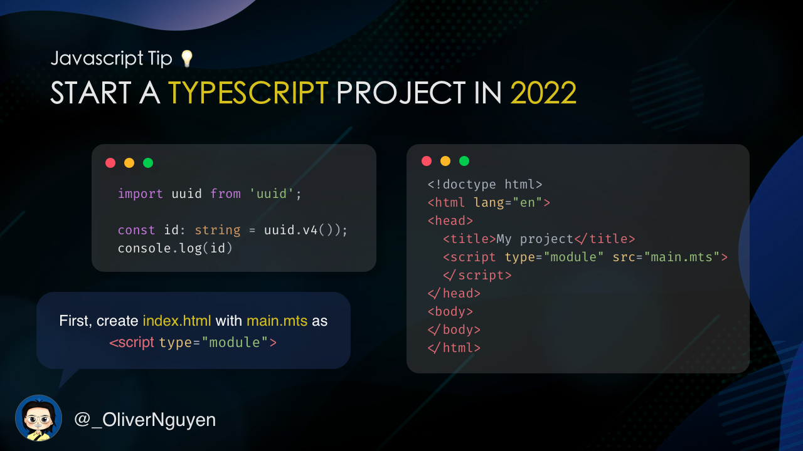
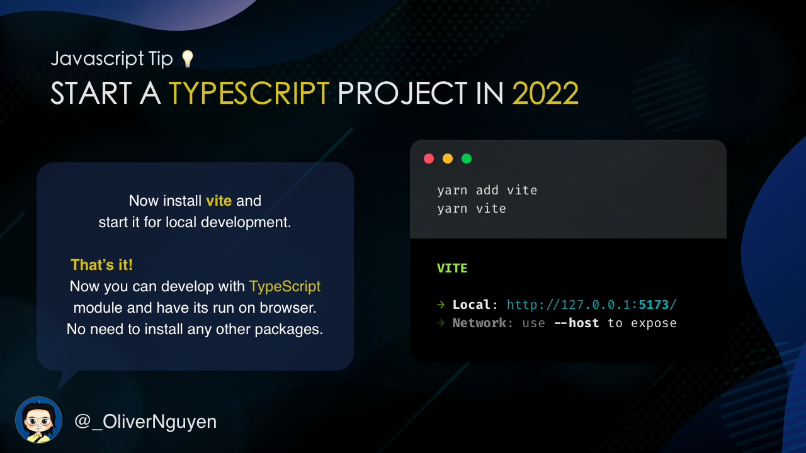
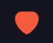

Create an emoji ball-drop game with Matter.js
You can’t connect the dots looking forward; you can only connect them looking backwards. So you have to trust that the dots will somehow connect in your future.
⸺ Steve Jobs
Sometimes, stepping outside of your comfort zone and taking some side projects is a great way to improve as a developer. The more skills you acquire, the more you can do. And you may need them someday in the future.
In this article, I’ll show you how to create a simple game with Matter.js, a 2D physics engine for the web. It’s called Emoji Drop.
Start a new TypeScript project with Vite

To quickly jump into the project, let’s use Vite. It’s a tool for modern web development with great support for TypeScript. It’s very easy to set up and use. Let’s create your project with index.html and index.mts:
<!doctype html>
<html lang="en">
<head>
<title>Emoji Drop</title>
<script type="module" src="index.mts"></script>
</head>
<body>
<canvas id="canvas"></canvas>
</body>
</html>
import Matter from 'matter-js'
const {Bodies, Composite, Engine, Render, Runner, Svg} = Matter;
console.log('Hello, Matter.js!');

And run these commands:
yarn init
yarn add vite matter-js
yarn vite
Now go to http://localhost:5137 and you should the message in the console. That’s it! You now have a project up and running with live-reload, npm package support, TypeScript type checking, and more. (code)
For production build, run yarn vite build.
Getting started with Matter.js
Matter.js is a great library for creating 2D physics engine for the web. It’s very easy to use and has a lot of features. You can create a simple game with it in a few minutes.
Now let’s create a Matter.js world with some bodies:
import Matter from 'matter-js'
const {Bodies, Composite, Engine, Render, Runner, Svg} = Matter;
const canvas = document.getElementById('canvas') as HTMLCanvasElement
canvas.width = 791;
canvas.height = 500;
const engine = Engine.create();
const render = Render.create({
engine: engine,
canvas: canvas,
options: {
width: 791,
height: 500,
wireframes: false
}
});
const ground = Bodies.rectangle(395, 505, 791, 10, {isStatic: true});
const leftWall = Bodies.rectangle(-11, 0, 10, 1000, {isStatic: true});
const rightWall = Bodies.rectangle(792, 0, 10, 1000, {isStatic: true});
Composite.add(engine.world, [ground, leftWall, rightWall]);
Render.run(render);
const runner = Runner.create();
Runner.run(runner, engine);
for (let i = 0; i < 10; i++) {
setTimeout(() => {
const body = Bodies.rectangle(350 + i, 0, 40, 40);
Composite.add(engine.world, [body]);
}, i * 500)
}
Just a handful lines of code and you’ll have a Matter.js project ready:
Now it’s time to add some balls and obstacles to the world. I leave this as an exercise for the reader. You can use Bodies.cirle() and put them into the world. (code)
Load SVG images
Let’s use the heart icon as our balls.
const heartPath = document.getElementById('path-heart');
const heartVertices = Svg.pathToVertices(heartPath, 1)
const heartBall = Bodies.fromVertices(
random(300, 491), 0,
[heartVertices],
{
restitution: random(0.5, 0.9),
render: {
sprite: {
texture: "heart.png",
xScale: 1,
yScale: 1
}
}
}
);
function random(a: number, b: number) {
return Math.random() * (b - a) + a;
}
This has two part: the heart shape and the heart texture.
- The heart shape is an SVG path. To add it to the world, we need to convert it to vertices.
- Put the svg path in the html. Retrieve it with
document.getElementById(). - Use
Svg.pathToVertices()to convert it to vertices. - And use
Bodies.fromVertices()to create a Matter.js body. - You’ll need to include pathseg.js to the project to make
Svg.pathToVertices()work.

- The heart texture is a png image. We can use it as the sprite of the body by
render.sprite.texture.
The game should look like the below at this step: (code)
Scoring
To get the score of a ball, let’s wait for the ball to stop then calculate the score from the x position.
How do we know when the ball stop? There are Body.velocity, Body.speed, Body.angularSpeed. Wait for them to be small enough and then calculate the score.
const didBallStop = (body: Matter.Body) => {
const {speed, angularSpeed} = body;
return speed < 0.1 && angularSpeed < 0.1;
}
Enjoy!
Congratulations! You’ve created a simple game with Matter.js. See an example here with the source code. Enjoy your works!
I also created a Twitter version. Like, retweet, or comment a face emoji on my tweet to throw a ball on my profile banner. Try it here:
I created an emoji ball-drop game and put it on my Twitter banner! 😍
— Oliver Nguyen 👋 (@_OliverNguyen) September 21, 2022
When you like, retweet, or comment a face emoji on this tweet, you throw an emoji on my banner 😆
Like or comment below to give it a try!👇 pic.twitter.com/vXQaCIlRnh
I’m Oliver Nguyen. I share about programming, JavaScript, and Go. I created OneSidebar — a browser extension for navigating GitHub. Follow me for more content.
Author
I'm Oliver Nguyen. A software maker working mostly in Go and JavaScript. I enjoy learning and seeing a better version of myself each day. Occasionally spin off new open source projects. Share knowledge and thoughts during my journey. Connect with me on , , , and .